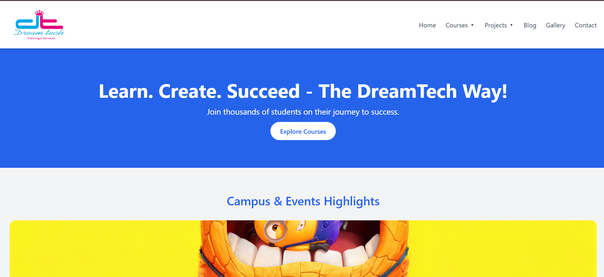
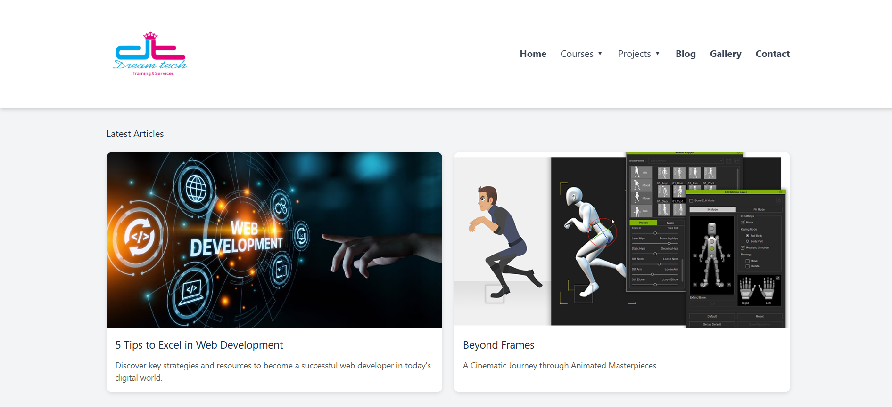
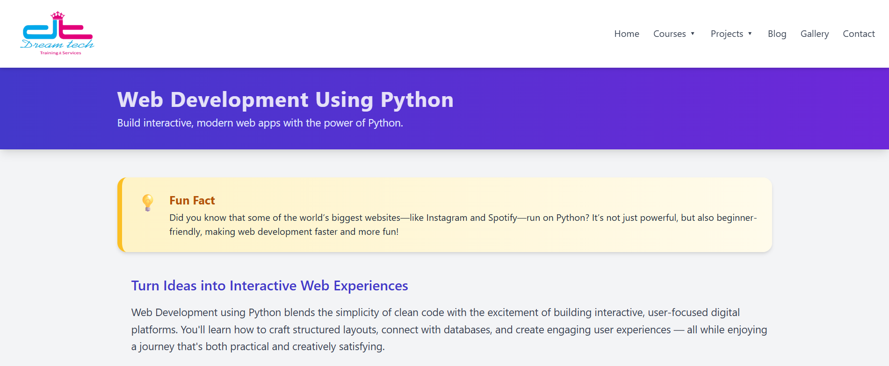
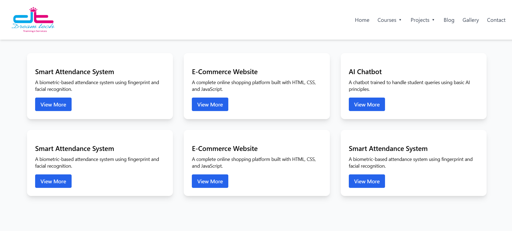
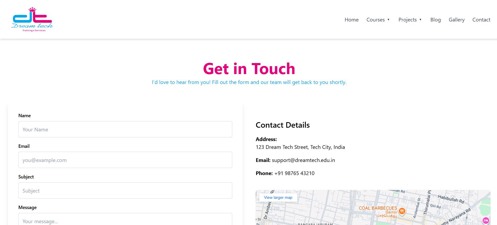

STARLIN MINI
Mathematician • Analytical Thinker • UX & Data Analysis
Transforming data and patterns into meaningful user experiences
About Me
I am a mathematician who applies analytical thinking, pattern recognition,
and problem-solving to UX and data analysis. I focus on clarity,
structure, and data-informed design decisions.
I enjoy analyzing systems, identifying gaps, and proposing practical
improvements that enhance usability and engagement.
Internship Experience
Project: Student Enrollment Enhancement Through Data Analysis
Organization: Dream Tech Training & Services, Nagercoil
Role: Data Analysis & UX Insight Intern
Overview
Analyzed marketing performance and digital presence to propose
data-driven strategies for improving student enrollment.
My Contribution
- Analyzed enrollment and marketing data
- Reviewed website UX and content structure
- Conducted competitor website analysis
- Proposed UX and content improvements
UX Analysis & Design Improvements
Key Observations
- The website followed a static, traditional layout
- Content lacked clarity and prioritization
- Visual hierarchy and contrast were inconsistent
- Navigation did not support easy discovery
Design Improvements
- Introduced a navigation bar with dropdown menus
- Categorized courses into online and offline
- Grouped projects by department
- Improved readability using spacing and typography
- Improved colour combination based on the logo
Website Improvements
Home Page

- Problem: The taskbar lacks dropdown menus.
- Insight: Adding dropdowns and including sections like Projects, Blog, and Gallery can enhance navigation.
- Improvement: The taskbar is redesigned, and Popular Courses and About sections are added to the homepage to keep navigation simple yet informative.
Blog Section

- Problem: Blog section was not available
- Insight: Blogs improve engagement and SEO
- Improvement: Introduced card-based blog layout
Blog Reading Experience

- Problem: Static content reduced engagement
- Insight: Multimedia improves comprehension
- Improvement: Added videos and refined typography
Courses

- Problem: Courses lacked structure
- Improvement: Grouped into online/offline cards
Course Details

- Problem: Important details of the course are not highlighted
- Improvement: Highlighted the details using cards
Projects

- Problem: Projects not showcased
- Improvement: Added project cards by department to showcase the works of students
Contact

- Improvement: Clean layout with clear CTAs
I contributed analytical insights, UX observations, and
data-driven design recommendations. Visual implementation was
completed collaboratively with a frontend developer.
Core Strengths
- Analytical & Mathematical Thinking
- Presentation
- Data Analysis
- Python
- HTML, CSS (Basic)
- Continuous Learning
Contact
Email: starlinmini45@gmail.com
LinkedIn: linkedin.com/in/starlin-mini-4lee5
STARLIN MINI | UX & Data Analysis